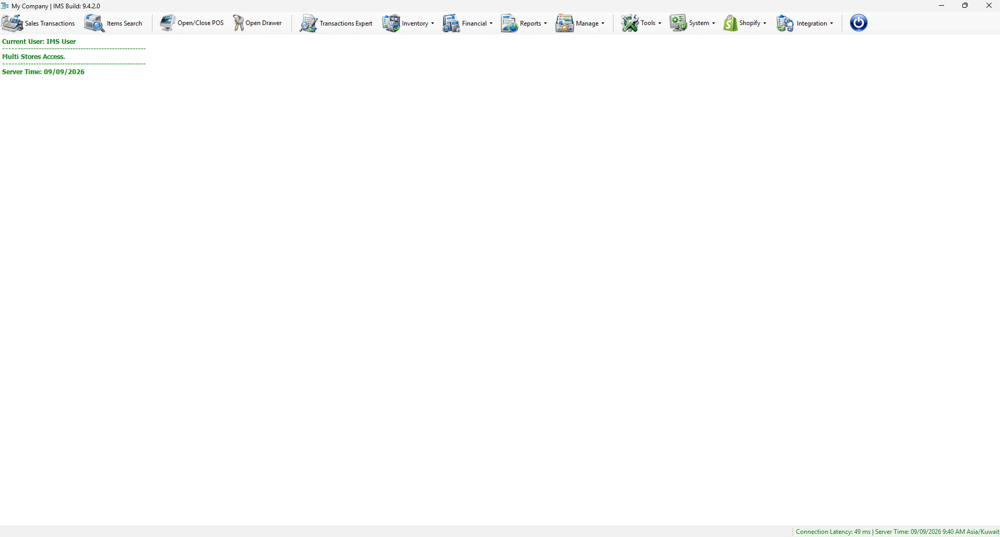

Window title & build
The title bar identifies the configured company and the installed IMS build, so users and IT can immediately confirm which environment/version is running.
This page covers IMS 9.4.6 startup, global user sign-in, company selection when required, the selected-company workspace, toolbar/menu access, connection information and navigation between open IMS screens.
IMS controls access at workstation level as well as user level. A new computer may be registered automatically. Whether it can continue immediately or must wait for approval depends on the workstation approval setting managed by IT.
| Situation | What happens | What the user should do |
|---|---|---|
| New workstation, automatic approval enabled | The workstation can be registered and approved automatically. | Continue to the IMS login screen. |
| New workstation, approval required | The workstation is added as pending approval and IMS does not continue to user login. | Send the displayed Workstation ID and Machine Name to IT. |
| Registered workstation is blocked or not yet approved | IMS shows a Workstation Not Authorized warning and exits. | Contact the system administrator. |
| Workstation hardware identity changed | IMS may require IT to review and approve the workstation again. | Provide the Workstation ID and Machine Name shown in the warning. |
IMS 9.4.6 authenticates the user against the IMS Global user store before connecting to a company database. Enter the Login Name and Password, then click Login.

Before opening a module, these are the six parts of the IMS workspace worth recognizing.
The title bar identifies the configured company and the installed IMS build, so users and IT can immediately confirm which environment/version is running.
The most frequently used Store functions—Sales Transactions, Items Search, POS control, cash drawer and Transactions Expert—stay one click away.
The active company database is selected during login; Store/POS and Active User then define the current operational context inside that company.
IMS working screens open inside the main application so several tasks can remain available and users can move between them without reopening each module.
The status area shows database latency together with server date/time and timezone, making connectivity problems visible while users are working.
The round power-style control locks the IMS workspace without closing the application, protecting an unattended signed-in session.
| Shortcut | Purpose | Important behavior |
|---|---|---|
| Sales Transactions | Opens the main sales/return transaction workspace. | Visible only when the user has permission for at least one supported sales or return transaction. |
| Items Search | Searches IMS item information. | If Sales Transactions or Stock Transfer is active, IMS can route item search into the active screen. |
| Open/Close POS | Opens POS shift control. | IMS prevents closing the POS while Sales Transactions is still running. |
| Open Drawer | Opens the connected cash drawer. | Depending on access, IMS may request additional authorization. |
| Transactions Expert | Opens advanced transaction tools. | Opens inside the main IMS workspace. |
The top menu is organized by business area. This same structure is used by the documentation website so users can find help using familiar IMS names.
| Menu | Main functions |
|---|---|
| Inventory | Stock Transfer, Transfer Following, Replenishment, Purchases, Stock Depreciation, Stock Adjustments, Stock Level and Item Movement. |
| Financial | Integration Setup, Close Fin Period, Posting, Posted Transactions, Journals Monitoring, Banks, Currencies, Sales Payment Types, Purchasing Expenses, Cash Receipts and Gift Vouchers. |
| Reports | Cash and payment reporting, Store and salesperson performance, customer/loyalty history, Gross Income, Main Sales Report, Sell Through, Purchasing and User-Defined Reports. |
| Manage | Suppliers, Stores, Sales Men/Ladies, Items, merchandise classifications, seasons, promotions, customers, loyalty and special-card master data. |
| Tools | Label Printing, Stock Maintenance, IMS Autos, Custom Views, Custom Reports, Reporting Scheduler and Custom Attributes. |
| System | Change Password, Options, Users Accounts, Group Policies, Users Activity, Settings, System Dashboard and Check for updates. |
| Shopify | Incoming Orders, Fulfillment Requests, Manage Profiles and the background Shopify Integration Server. |
| Integration | Starco Stock Take, V-Count Settings and Integration Center for configurable external endpoints and sync monitoring. |
Many IMS forms open inside the central workspace. When a supported working screen is opened, IMS adds a text button for it to the lower information strip. Use those buttons to bring an open screen to the front or hide the currently active screen. Closing the form removes its button.
Use the round power-style button to lock the IMS workspace when it is available. IMS hides the normal toolbar and open working screens and displays an authentication screen. This is useful when leaving a logged-in workstation unattended.
IMS periodically checks communication with the database server and displays the result in the lower-right corner together with the server time and timezone.
| Status | What IMS shows | Meaning |
|---|---|---|
| Normal | Connection latency in green. | The connection check completed successfully. |
| Higher latency | The latency indicator changes to a warning color when it exceeds 75 ms. | The server is reachable, but communication is slower than the threshold used by IMS. |
| Disconnected | Disconnected in red. | IMS could not complete its database connection check. |
The main screen performs background checks while IMS is running. New stock transfers can trigger a visible blinking notification. New online activity can cause the Shopify button to flash red. If the server connection is lost, the main notification area can also report that the server connection is down.
During startup and periodic background checks, IMS can detect a newer application version. A critical update must be installed before the current version can continue. A non-critical update can be announced in the IMS title bar until the user installs it.
IMS supports Arabic right-to-left layout and light/dark appearance. The theme can follow Windows or use the saved IMS preference, and the selected language is applied when the main form is created.
If the database is available but the workstation is not authorized, IMS stops before user login. Give the Workstation ID and Machine Name from the warning to IT so they can review the workstation.
A changed workstation hardware identity can require a new approval when automatic workstation approval is disabled.
The credentials were not accepted. Re-enter the password and verify the user name. If the account is disabled, contact the system administrator.
Use the temporary password provided by the administrator, change it when prompted, then sign in again.
IMS hides menu items according to user permissions. Ask your system administrator to check your assigned access if you need that function.
IMS changes the latency indicator after the measured database response time exceeds 75 ms. The system may still be connected, but communication with the server is slower.
Yes. Supported screens remain inside the main workspace, and IMS adds buttons for active child screens so you can switch between them.
If Sales Transactions is still running, IMS blocks the POS close action and asks you to close Sales Transactions first.